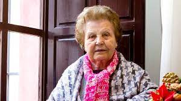
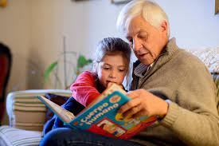
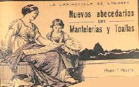
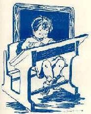
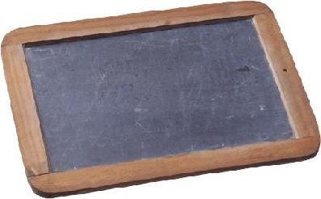
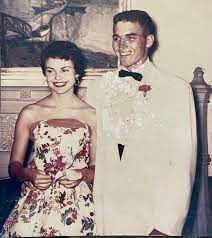
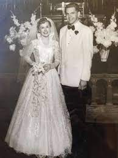

LA NI;EZ DE LOS ABUELOS.
MARGARITA FERNANDEZ.
Recuerdo cuando mi abuela nos contaba como era la vida cuando ella era niña. Abuela, ¿cómo era tu mundo cuando eras niña? Porque tu sabías que ese mundo debía de ser extraño, pero nunca te imaginaste que lo fuera tanto, que no hubiera televisión o que sólo algunos niños fueran al colegio. Pero todo esto no es exclusivo de nuestros hijos y sus abuelos, sino que quizás un día seamos nosotros los abuelos y nuestra infancia les suene a chino a nuestros nietos cuando nos pregunten, abuelos, ¿cómo era todo cuando eras niños?.
JUAN GUERRERO
Pues nosotros escuchábamos música en cintas de cassete que había que rebobinar y vinilos que había que darle la vuelta cada vez que los querías volver a escuchar.
MARIA ROSARIO
Durante gran parte de mi infancia teníamos dos canales de TV y no solo había programación infantil durante un par de horas.
LA JUVENTUD DE CADA UNO DE SUS ABUELOS
MARGARITA FERNANDEZ.
Hace 50 años los niños y niñas jugábamos con juguetes hechos por nosotros mismos: muñecas de trapo, caballos de madera
JUAN GUERRERO
En el pueblo éramos muchos niños y, como no teníamos dinero para comprar juguetes, jugábamos al escondite y con las chapas de las botellas.
MARIA ROSARIO
Cada mañana nos levantábamos, desayunábamos y nos íbamos al colegio. Al mediodía teníamos que ir a por un cántaro de agua a la fuente.
FOTOS DE SU MATRIMONIO
-
MARGARITA FERNANDEZ.
JUAN GUERRERO
MARIA ROSARIO

LA VIDA DE SUS HIJOS
-
MARGARITA FERNANDEZ.
Cuando mis hijos estaban niños, no queria que siguieran creciendo porque sabia que con el tiempo ellos empesarian a crear su propia vida su propio destino, y siempre les desee lo mejor en su vida no queria que ningun tripiezo en su camino, pero me doleria ver como mis hijos despues de todos los años que los enseñé se iban camino con sus hijos y sus parejas a vivir en un nuevo hogar. Pero soy feliz porque tengo dos hermosos nietos los cueles adoro mucho y sobre todo les doy el cariño amor y confianza que tal vez alguna vez no les di a mis hijos.
JUAN GUERRERO
Desde que mi esposa falleció fueron momentos dificiles con mi hijo pues solo nos teniamos los dos, y era mi responsabilidad estar con el eseñarle lo beno y lo malo, ahora despues de tantos años mi hijo me agradece por ese amor ese cariño que yo le di esa confinza y consejos que yo le di. Aveces la vida nos enseña que es lo bueno y lo malo y tu no quieres lo malo para tus hijo nimucho menos quieres que un hijo sufra, y apezar de mi edad mi hijo y yo seguimos compartiendo un gran lazo familiar.
MARIA ROSARIO
Tengo dos hermosas hijas a las cuales amo mucho, y me llenan de mucho orgullo porque ellas piensan que unos las reñana por mal por que uno no las quiere y eso es un error, uno las regaña porque mi experiencia me dice que lo que hacen esta mal poruqe lo que ellas piensan a hacer o seguir malos pasos solo les va a traer problemas. Hoy en dia ellas estan en el exterior de una vez al año viene a visistarme y contarme de sus vidas por ella, y eso me hace pensar en que sin importar el tiempo nosostros los padres siempre debemos estar para nuestros hijos.
LOS MOMENTOS TRSITEZ Y FELICES DE SUS FAMILIAS.
MARGARITA FERNANDEZ.
El mas feliz cuando nacieron mis dos hijos y el mas triste prefiero no pensar en ello, hay que mirar lo bueno.
JUAN GUERRERO
Para mi creo que he tenido varios momentos de felicidad cuando comparto con mi familia, esos son los momentos que mas anhelo, y el momento mas triste fue la muerte de mi abuela que era como mi madre para mi.
MARIA ROSARIO
yo los tengo muy claros los momentos mas felices es cuando ves la carita de tus hijas esos que te llevas imaginando nueve meses y el mas triste fue la muerte de mi padre